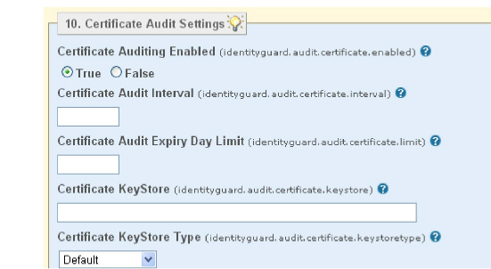

|
IdentityGuard Server 11.0 Administration Guide |
|
IdentityGuard Server 11.0 Administration Guide |
If certificate auditing is configured, Entrust IdentityGuard monitors the certificates in the system keystore and logs audits when those certificates approach and reach expiry. The certificates that are monitored include:
● the SSL certificate for the Entrust IdentityGuard system
● certificates imported into the keystore to allow Entrust IdentityGuard to connect to other systems such as Self-Service Module, the repository or third-party notifications services such as Authentify and Click-A-Tell
Early notification of pending expiry allows the system operation to update certificates before they cause a system outage.
Each Entrust IdentityGuard Server replica has independent certificates, so certificate auditing should be enabled on all replicas.
To configure certificate auditing
1. Start the Entrust IdentityGuard Properties Editor on the primary or replica server where you want to modify the auditing features. (See Log in or out of the Properties Editor.)
2. On the Table of Contents, click Certificate Audit Settings.

3. Under Certificate Auditing Enabled, do the following:
● Ensure True is selected on the primary Entrust IdentityGuard server.
● Ensure False is selected on all replicated Entrust IdentityGuard servers, if present. This selection prevents duplicate audits from being generated.
4. Optional. Enter a number in the Certificate Audit Interval field. This setting determines how often in hours Entrust IdentityGuard performs the audit check for certificates nearing expiry. The default is 12.
The audit check interval is reset on system startup. This means that if the service is always restarted within the specified interval, the audit integrity is never checked.
5. Under Certificate Audit Expiry Day Limit, enter a number in days. An audit is generated when the current date gets to within the given number of days of the certificate expiry. For example, if you set the value to 10 and the certificate expires on December 30th, an audit is logged on December 20th.
If not set, the default is 30.
6. Click Validate & Save.
7. Log out of the Properties Editor and restart the Entrust IdentityGuard server service after you make all property changes.
The audits related to certificate expiry have the following codes:
● If a certificate is near expiry, AUD160 is logged.
● If a certificate is past expiry, AUD161 is logged.